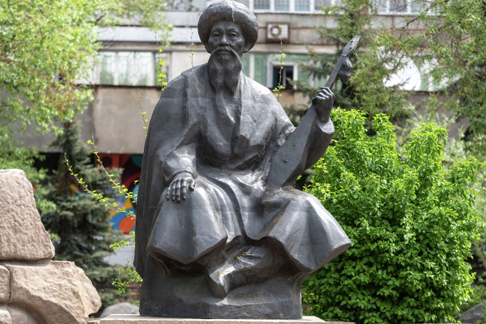

Фотосурет уақытша жүктелмеді')">Жамбыл Жабаев (1846–1945) — қазақтың әйгілі ақыны, жыршы әрі суырыпсалма өнер шебері. Оның шығармашылығы халықтың ауызша поэзия дәстүрін танытады.
Қосымша ақпарат: adebiportal.kz
Сурет: https://ru.sputnik.kz/20250119/kakoy-segodnya-prazdnik-20-yanvarya-50109966.html